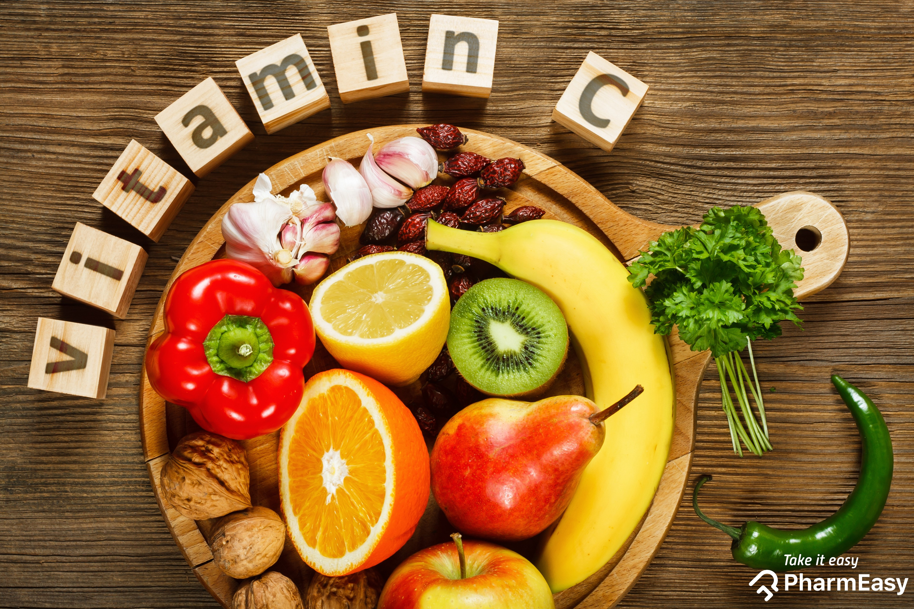
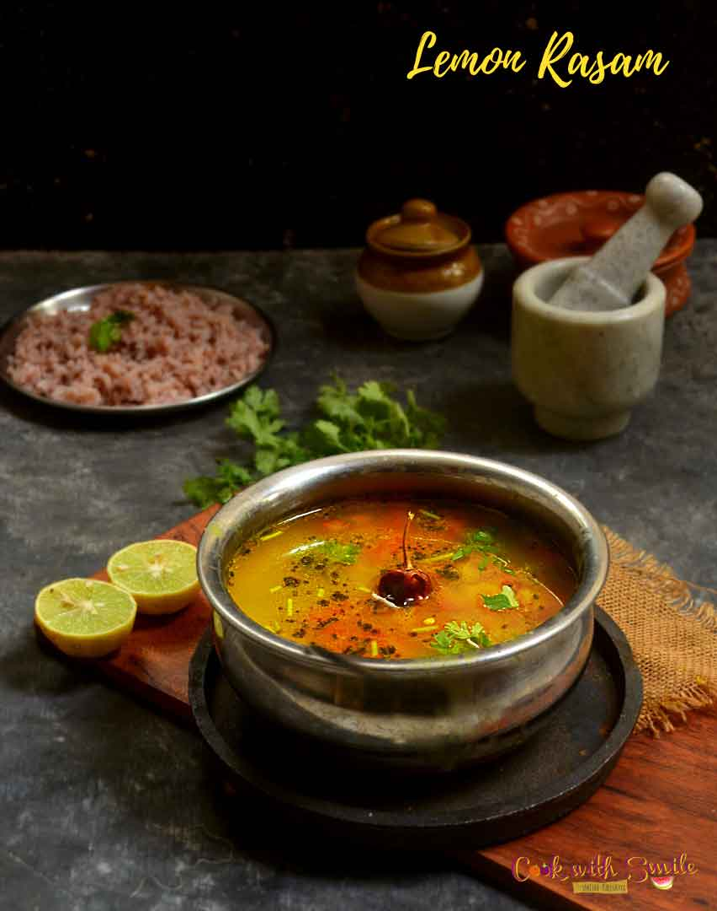

VITAMIN C
INTRODUCTION
For centuries, the insidious disease scurvy dogged humankind. Explorers and seafaring men especially feared this mysterious ailment that inflicted aching pain and made each journey a gamble with death. Writings that date back as far as 1500 B.C.E. Although they did not know why, some travelers avoided this scourge. Unknowingly, they had eaten foods that contained vitamin C. The mystery began to be solved in 1746 by James Lind.
FUNCTIONS OF VITAMIN C
- Collagen synthesis: Vitamin C plays an important role in the formation of collagen, a fibrous protein that helps reinforce the connective tissues that hold together the structures of the body.
- Antioxidant properties: Like vitamin E and beta carotene, vitamin C has antioxidant properties, preventing oxidation of free radicals.
- Helps in the absorption of non-heme iron, which comes mainly from plant foods.
- Vitamin C is a great immunity builder. It helps to build your immune system by increasing the production of WBC, helping to fight common cold and flu.
SOURCES OF VITAMIN C
- Citrus fruits, such as oranges and orange juice
- Peppers
- Blackcurrants
- Brussel sprouts
- Strawberries
- Amla

DEFICIENCY OF VITAMIN C
Scurvy
Scurvy is the well-known vitamin C deficiency disease. Its first symptoms surface after about a month on a vitamin C-free diet. As the body loses its ability to synthesize collagen, connective tissue starts breaking down and gums and joints begin to bleed. Weakness develops, and small hemorrhages appear around the hair follicles on the arms and legs. As the disease progresses, previously healed wounds reopen, and bone pain, fractures, diarrhea, and psychological problems such as depression commonly emerge.
Scurvy is rare in developed countries but possible among those who eat few fruits and vegetables, follow extremely restricted diets, or abuse alcohol or drugs. Less severe vitamin C deficiency can impair cellular functions without causing overt scurvy. The most common symptoms are inflammation of the gums and fatigue.
RECIPES
Lemon Rasam
Ingredients
- Lemon - 1
- Water - 3 cups
- Ginger - 1 piece finely chopped
- Green chilly - 3
- Rasam powder - ½ tsp
- Turmeric powder - ½ tsp
- Asafetida - ½ tsp
- Cumin - 1 tsp
- Curry leaves - 10 nos
- Black pepper - 1 tsp
- Coriander leaves
- Salt as required
For tempering:
- 1 tbsp ghee or oil
- 1 tsp mustard seeds
- 1-2 dried red chilies
- A few curry leaves and green chilies
Directions
- Boil 3 cups of water in a pan.
- Add green chilies, rasam powder, turmeric powder, and boil for a few minutes.
- Add lemon juice.
- In another pan, add oil and roast cumin and curry leaves.
- Add the roasted mixture to the main mixture, then add coriander leaves and it's ready to serve.
